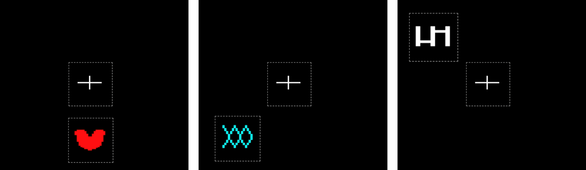
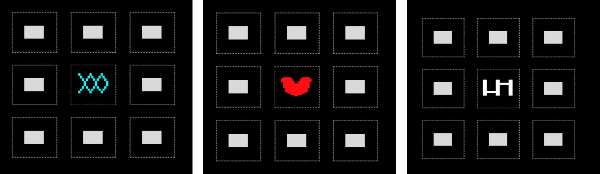
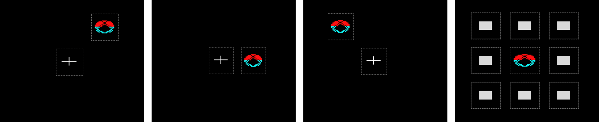

配對聯結學習
1. 學習階段
本作業共有 6 個回合，每個回合包含學習、測驗與控制三個階段。
- 螢幕上會依序出現 6 個不同的圖形，每個圖形出現在不同的位置。
- 請記住每個圖形與它出現位置的對應關係，稍後會進行測驗。

2. 測驗階段
學習階段結束後，剛才看過的圖形會一次一個出現在螢幕中央。
- 請從周圍的 8 個位置中，點選該圖形在學習階段出現的位置。
- 每題有 5 秒鐘的作答時間，請盡快選擇正確的位置。
- 當螢幕顯示「再試一次」時，會再次呈現同一組圖形，接著重新進行測驗。

3. 控制階段
這個階段會使用相同的圖形，依序出現在不同的位置。
- 請按照出現順序，記住每一次圖形出現的位置。
- 測驗時，請依照剛才的相同順序，逐題點選對應的位置。

作業即將開始
本作業大約需要 15 分鐘完成，請全程保持專注。
- 一般測驗：記住圖形與位置的對應關係。
- 控制測驗：記住位置出現的順序。
- 作答時，請盡快且正確地選擇位置。
- 進入測驗頁後，請按「開始測驗」，系統將嘗試切換至全螢幕模式。